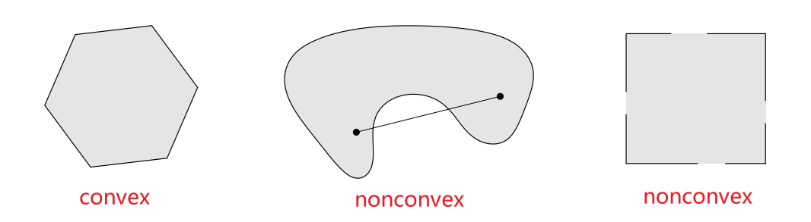
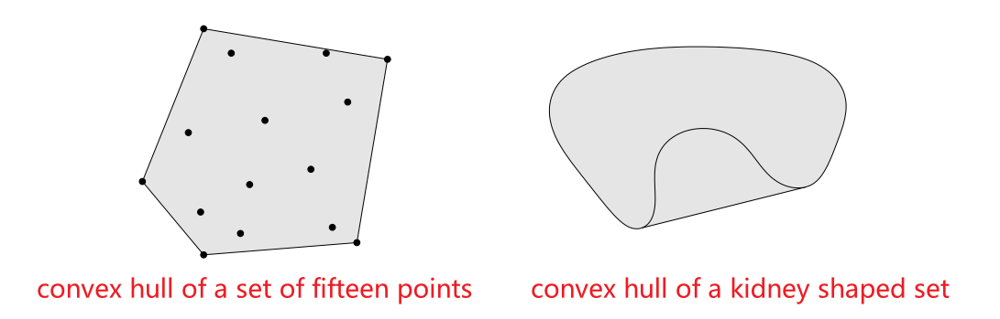
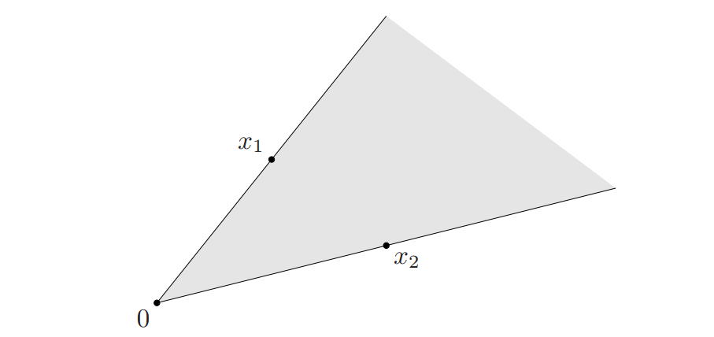
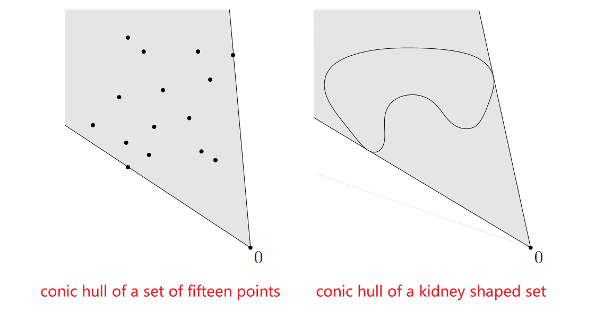
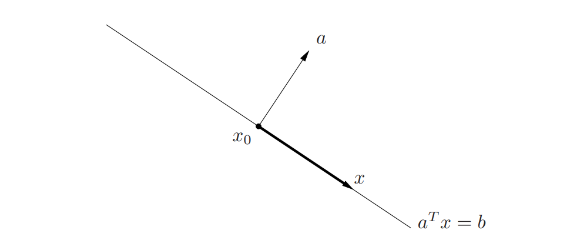
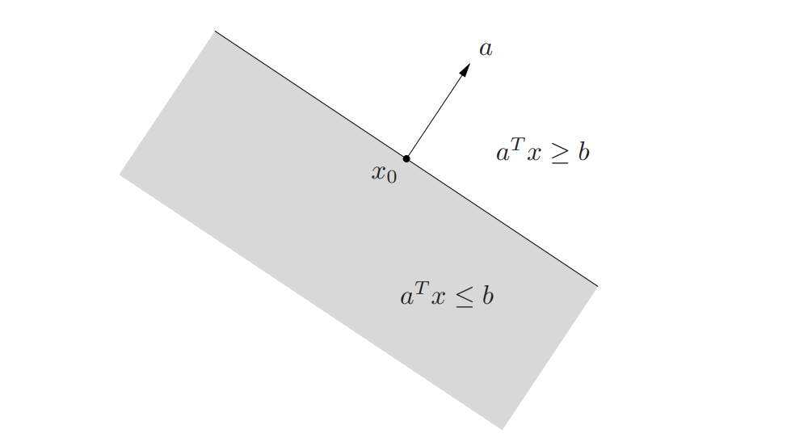
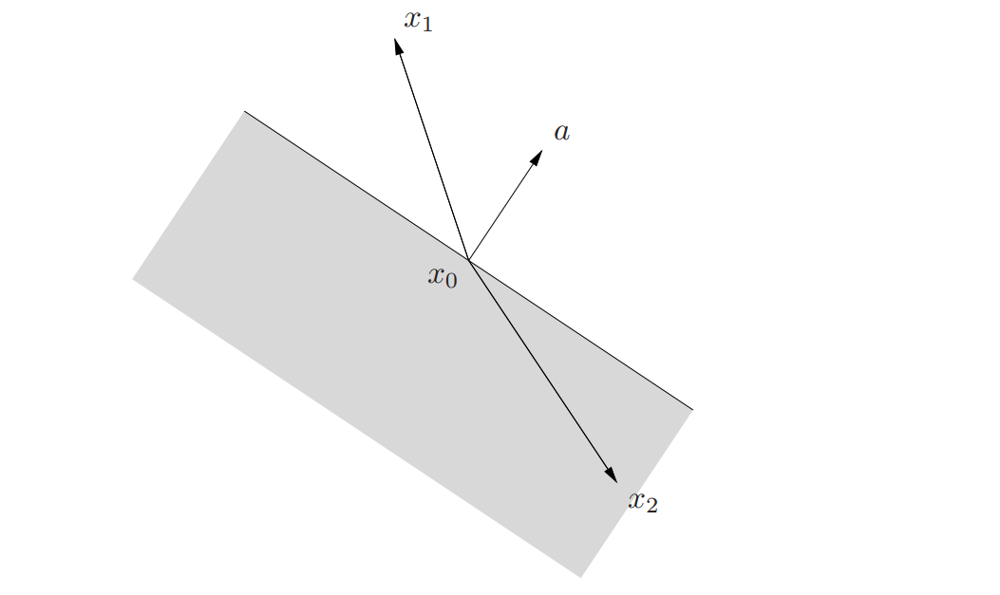
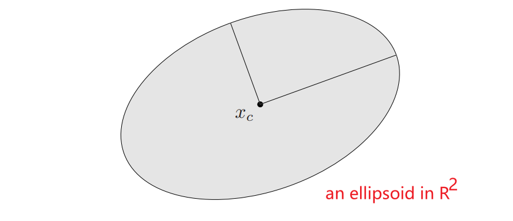
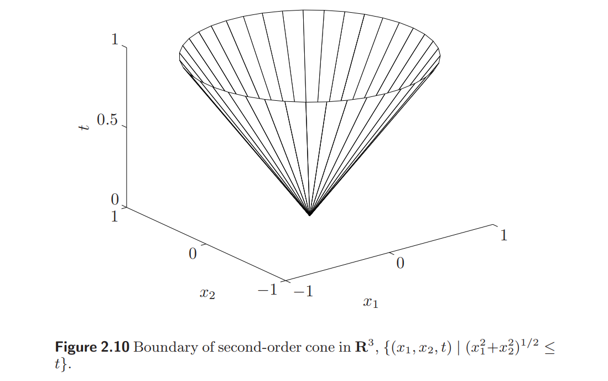

# Affine and Convex Set 仿射集和凸集
# Line and Line Segments 直线和线段
Suppose are two points in . Points of the form
form the line passing through and .
假设 和 是 维空间 中不重合的两个点，当 时，空间中符合表达式 的所有点，构成了穿过点 和 的直线。
The parameter value corresponds to , and the parameter value corresponds to . Values of the parameter between and correspond to the (closed) line segment between and
当参数 时 ，当 时 ，当 在 到 的范围内变化时，符合表达式 的所有点构成了 和 之间的（封闭）线段。
Expressing in the form
gives another interpretation: is the sum of the base point (corresponding to ) and the direction (which points from to ) scaled by the parameter .
我们对等式做一下变形，可以从另一个角度理解直线。 是基点 (对应着 ) 和方向 (从 指向 ) 乘以参数 的和。
# Affine Sets 仿射集
A set is affine if the line through any two distinct points in lies in , i.e., if for any and , we have . In other words, contains the linear combination of any two points in , provided the coefficients in the linear combination sum to one.
如果通过集合 中的任意两个不同的点，构成的直线仍然在集合 中，那么这个集合 是仿射的。也就是说，仿射集对于任意的 以及 恒满足 。 更进一步，集合 中包含了集合 中任意两点系数和为 的线性组合。
This idea can be generalized to more than two points. We refer to a point of the form θ1x1 + · · · + θkxk, where θ1 + · · · + θk = 1, as an affine combination of the points x1, . . . , xk.
这个定义可以推广到多个点的情况。如果 那么我们称 是 的仿射组合
Using induction from the definition of affine set (i.e., that it contains every affine combination of two points in it), it can be shown that an affine set contains every affine combination of its points: If is an affine set, , and = 1, then the point also belongs to .
根据仿射集的定义（仿射集中任意两点的仿射组合仍然在仿射集中）我们可以归纳出以下结论：一个仿射集合包含其中任意个点的仿射组合。即如果 是一个仿射集合， 并且 = 1, 那么 仍然在 中.
Proof 证明
Suppose that we have three points
Since , we know that
Similarly, because , for any point on the affine combination we have such an affine combination:
We set to be , to be and to be , we have while
Q.E.D.
If is an affine set and , then the set
如果 是一个仿射集，对于任意一个
is a subspace, i.e., closed under sums and scalar multiplication.
集合 是一个子空间（关于加法和数乘封闭）
Proof 证明
Suppose that and
Then, we have and .
So,
Since, is affine, and
We conclude that , since
Q.E.D.
Thus, the affine set C can be expressed as
因此，我们可以将仿射集 改写成：
i.e., as a subspace plus an offset.
即一个子空间加上一个偏移
The subspace associated with the affine set does not depend on the choice of , so can be chosen as any point in .
与仿射集 相关联的子空间 不受 的影响。所以 可以在仿射集 中任意选取。
We define the dimension of an affine set as the dimension of the subspace , where is any element of .
仿射集 的维数 = 子空间 的维数，其中 是 中的任意元素。
Example: The solution set of a system of linear equations, , where and , is an affine set.
实例：线性方程组 （其中 ， ）的解集是一个仿射集。
Proof 证明
Suppose , i.e., . Then, for any , we have
Therefore, the affine combination is also in . We can conclude that is an affine set.
Q.E.D
Notice: the subspace associated with the affine set is the nullspace of .
注意：与仿射集 相关联的子空间，就是矩阵 的零空间。
converse: every affine set can be expressed as the solution set of a system of linear equations
线性方程组的解集是一个仿射集。与之相反，任意一个仿射集也可以表示为一个线性方程组的解集。
# Affine Hall, Affine Dimension and Relative Interior 仿射包，仿射维数和相对内部
The set of all affine combinations of points in some set is called the affine hull of , and denoted :
集合 的仿射包是由集合 中的点的所有仿射组合构成的集合:
The affine hull is the smallest affine set that contains , i.e.,
集合 的仿射包 是包含集合 的最小仿射集，即满足 。
Proof 证明
Suppose that there exists an affine set smaller than , s.t., .
Since the affine set is an smaller affine set, there must be at least one element in affine hull but not in affine set
We set where
However, because , we have which leads to contradiction.
So, the affine hull is the smallest affine set that contains
Q.E.D.
if is any affine set with , then .
对于任何包含 的仿射集 , 均有 。
包含 的仿射包是所有包含 的仿射集的交集！
We define the affine dimension of a set C as the dimension of its affine hull.
我们定义集合 的仿射维数为其仿射包的位数。
As an example consider the unit circle in , i.e., . Its affine hull is all of , so its affine dimension is two.
以 上的单位圆环为例，它的仿射包是全空间 ，所以它的放射维度是 2
If the affine dimension of a set is less than , then the set lies in the affine set .
如果集合 的仿射维数小于 那么这个集合在仿射集 中。
We define the relative interior of the set , denoted , as its interior relative to :
我们定义集合 的相对内部为 的内部 ：
where the ball of radius and center in the norm ( Here is any norm; all norms define the same relative interior).
其中， 是以 为圆心， 为半径的球。这个球是以范数 定义的（无论 是什么范数，所对应的相对内部是相同的）
We can then define the relative boundary of a set as , where is the closure of
我们随后可以定义集合 的相对边界为 ， 此处 是集合 的闭包。
Example: Consider a square in the -plane in defined as
例：考虑定义在 中的 平面
Its affine hull is the -plane, i.e.,
集合 的仿射包是整个 平面。也就是说 \bold{aff}~C =\
A point is in the interior of a set if you can draw a small open ball around it which is itself contained in the set. But for any point in our set , any open ball around any point in it will contain points outside the -plane, and so set has empty interior.
如果通过集合中的某点，可以画出一个包含在这个集合内部的小开放球，那么我们认为这个点在集合的内部。但是，对于集合 而言，以集合 中的任意一点为中心的开放球必定包含 平面以外的点。所以集合 的内部为空。
The relative interior of a set is obtained by looking at the affine hull of the set, which in this case is , and using the appropriate metric there.
集合的相对内部是通过查看集合的仿射包（在本例中是 ），并在那里使用适当的度量来获得的。
注：依然是通过集合 内一点画开放小球。这一次先和集合 的仿射包取交集，然后再判断是否包含在 内部。如果包含，则是相对内部
the relative interior of is:
集合 的相对内部是：
The boundary of a subset of a topological space is the set of points in the closure of not belonging to the interior of . Since, the interior of is , the boundary of is itself.
拓扑空间 的子集 的边界是集合 的闭包中不属于 内部的点的集合。集合 的内部为空，所以集合 的边界就是集合 本身。
Similarly, the relative boundary of is the wire-frame outline
类似地，集合 的相对边界是集合 的边框。
# Convex Set 凸集
A set is convex if the line segment between any two points in lies in , i.e., if for any and any with , we have:
如果集合 中的任意两点连成的线段仍然在集合 中。那么我们称这个集合 是凸集。也就是说，对于任意 和 下式成立：

We call a point of the form , where and , a convex combination of the points .
我们称 是点 的一个凸组合，其中 并且
As with affine sets, it can be shown that a set is convex if and only if it contains every convex combination of its points.
和仿射集类似，一个集合是凸集当且仅当这个集合包含其中任意点的所有凸组合。
A convex combination of points can be thought of as a mixture or weighted average of the points, with the fraction of in the mixture.
点的凸组合可以看做是点的混合或加权平均。 代表 在混合中所占的权重。
The convex hull of a set , denoted , is the set of all convex combinations of points in :
集合 的凸包 是由集合 内所有点的凸组合构成的：
As the name suggests, the convex hull is always convex. It is the smallest convex set that contains : If is any convex set that contains , then .
顾名思义，凸包一定是凸的。凸包是包含集合 的最小凸集。也就是说，如果集合 是包含集合 的凸集，那么一定有

The idea of a convex combination can be generalized to include infinite sums, integrals, and, in the most general form, probability distributions.
凸组合的概念可以扩展到无穷级数、积分以及大多数形式的概率分布。
- Suppose satisfy and , where is convex. Then if the series converges.
假设 满足 并且 ，其中 是凸集。如果级数 收敛，那么 - More generally, suppose satisfies for all and , where is convex. Then , if the integral exists.
更一般地说，假设 对所有 满足 ，并且 ，其中 是凸集。如果积分 存在，那么 - In the most general form, suppose is convex and is a random vector with with probability one. Then .
最一般的情况是，假设 是凸集， 是随机变量。并且 的概率是 1，那么 .
For example, suppose the random variable only takes on the two values and , with and , where . Then , and we are back to a simple convex combination of two points.
# Cones 锥
A set is called a cone, or nonnegative homogeneous, if for every and we have .
如果对于任意的 和 都有 那么我们称集合 是一个锥（或也称非负齐次）。
A set is a convex cone if it is convex and a cone, which means that for any and , we have:
如果集合 是一个锥，并且是凸集，那么集合 是一个凸锥。即对于任何的 和 都有：
Points of this form can be described geometrically as forming the two-dimensional pie slice with apex and edges passing through and .
在几何上，具有此类形式的点，构成了二维的扇形。这个扇形以 为顶点（ 时），边通过点 和

A point of the form with is called a conic combination (or a nonnegative linear combination) of .
具有 ， 形式的点称为 的锥组合（或非负线性组合）。
If () are in a convex cone , then every conic combination of is in . Conversely, a set is a convex cone if and only if it contains all conic combinations of its elements.
如果 () 均属于凸锥 中，那么 的每一个锥组合也在 中。反言之，集合 是凸锥的充要条件是它包含其元素的所有锥组合。
Like convex (or affine) combinations, the idea of conic combination can be generalized to infinite sums and integrals.
与凸组合（或仿射组合）类似，锥组合的概念可以扩展到无穷级数和积分中。
The conic hull of a set is the set of all conic combinations of points in , i.e.,
集合 的锥包是 中元素的所有锥组合的集合。即
which is also the smallest convex cone that contains .
它是包含 的最小凸锥。

# Some Important Examples 重要的例子
some simple and important examples of convex sets:
一些简单且重要的凸集：
- the empty set , any single point (i.e., singleton) and the whole space are affine (hence, convex) subsets of
空集 ，任意单点集 和全空间 都是 的仿射（当然也是凸的）子集 - Any line is affine. If it passes through zero, it is a subspace, hence also a convex cone.
直线是仿射的。如果直线经过原点 , 那么这条直线就是子空间，因此，也是凸锥。 - A line segment is convex, but not affine (unless it reduces to a point).
线段是凸集，但不是仿射集。除非退化成单点集。 - A ray, which has the form , where , is convex, but not affine. It is a convex cone if its base is .
一条射线 是凸的。但不是仿射的。如果基点 则它是凸锥。 - Any subspace is affine, and a convex cone (hence convex)
任意子空间是仿射的。是凸锥（当然也是凸的）。
# Hyperplanes and halfspaces 超平面和半空间
A hyperplane is a set of the form:
超平面是具有以下形式的集合
where , and .
其中 并且 .
- Analytically it is the solution set of a nontrivial linear equation among the components of (and hence an affine set).
解析上，超平面是关于 的线性方程组的非平凡解空间（因此一定是一个仿射集）。 - Geometrically, the hyperplane can be interpreted as the set of points with a constant inner product to a given vector , or as a hyperplane with normal vector ; the constant determines the offset of the hyperplane from the origin.
几何上，超平面可以解释为：与给定向量 的内积为常数的点的集合。另一种解释是：可以看做法线方向为 的超平面，其中，常数 决定了这个平面从原点的偏移。
This geometric interpretation can be understood by expressing the hyperplane in the form:
为了更好地在几何上理解超平面，我们将超平面表示为下面的形式：
where is any point in the hyperplane (i.e., any point that satisfies ). This representation can in turn be expressed as:
其中 是超平面中满足 的任意一点。这样一来，超平面的表达式可以改写成：
where denotes the orthogonal complement of , i.e., the set of all vectors orthogonal to it:
其中， 是 的正交补。即与向量 正交的向量的集合：
This shows that the hyperplane consists of an offset , plus all vectors orthogonal to the (normal) vector .
由此可见，超平面由偏移 加上所有正交于向量 的向量构成。（实际上向量 就是超平面的法向量）

A hyperplane divides into two halfspaces. A (closed) halfspace is a set of the form:
一个超平面将 分成两个半空间。（闭的）半空间是具有以下形式的集合：
where , i.e., the solution set of one (nontrivial) linear inequality.
即，线性不等式的（非平凡的）解空间。其中
Halfspaces are convex, but not affine.
半空间是凸的，但不是仿射的。

The halfspace \eqref{eq2.1} can also be expressed as:
半空间 \eqref{eq2.1} 还可以表示为
where is any point on the associated hyperplane, i.e., satisfies .
其中， 是超平面上的任意一点。即 满足 .
The representation \eqref{eq2.2} suggests a simple geometric interpretation: the halfspace consists of plus any vector that makes an obtuse (or right) angle with the (outward normal) vector .
表达式 \eqref{eq2.2} 有一个简单的几何解释：半空间由 加上任意一个与（向外的）法向量 呈钝角（或直角）的向量组成。

- The boundary of the halfspace is the hyperplane .
半空间 的边界是超平面 . - The set , which is the interior of the halfspace , is called an open halfspace.
集合 是半空间 的内部，也称为半开空间。
# Euclidean balls and ellipsoids 欧几里得球和椭球
A (Euclidean) ball (or just ball) in has the form:
空间里的欧几里得球（或简称球）具有下面的形式：
where , and denotes the Euclidean norm, i.e.,
其中 ， 表示欧几里得范数（也就是二范数）即 \Vert u\Vert_2=(u^Tu)^
The vector is the center of the ball and the scalar is its radius; consists of all points within a distance of the center .
向量 是球心，标量 是半径。 由距离球心 不超过 的所有点构成。
Another common representation for the Euclidean ball is:
欧几里得球的另一个常见的表达式是：
A Euclidean ball is a convex set: if , and , then
欧几里得球是凸集。即如果 , 并且 , 那么
Here we use the homogeneity property and triangle inequality for
此处使用到了欧几里得范数（二范数）的齐次性，以及三角不等式。
A related family of convex sets is the ellipsoids, which have the form:
一类相关的凸集是是椭球。它们具有以下的形式：
where , i.e., is symmetric and positive definite.
其中 即 是对称的正定矩阵。
Definiteness of Matrix 矩阵的正定性
Real Quadratic Forms 二次型
Let be a real matrix. A quadratic form in is a transformation:
假设矩阵 是一个 的实方阵。它的二次型是这样一个变换：
where is a vector and is its transpose.
其中，向量 是 行 列的向量，向量 是向量 的转置向量。
The transformation is a scalar. For example, we define:
二次型变换，会得到一个标量。例如：
Given a vector , the quadratic form defined by the matrix is
给定一个 行 列的向量 ，那么矩阵 的二次型就是：
Restricting attention to symmetric matrices 让我们着眼于对称矩阵
a matrix is symmetric if and only if
矩阵 是对称矩阵，当且仅当
Any quadratic form can be written as
任意一个二次型可以被改写成以下形式：
since is a scalar, the transpose of a scalar is equal to the scalar itself.
由于二次型 是标量。标量的转置等于自身。、
The matrix is symmetric because .
矩阵 是对称矩阵，因为矩阵 和矩阵 相等。
Thus, we have proved that we can always write a quadratic form as where is symmetric.
因此，我们总能将二次型 改写成 ，其中 是一个实对称矩阵。
Definiteness 正定性
Square matrices can be classified based on the sign of the quadratic forms that they define.
方阵可以根据其对应的二次型的符号来分类。
Let matrix be a real symmetric matrix.
令矩阵 为 的实对称方阵。
- the matrix, denoted , is positive definite if and only if for any non-zero vector having real entries;
矩阵 是正定矩阵，记作 ，当且仅当对于任意的非零实向量 而言， 恒成立 - the matrix, denoted , is positive semi-definite if and only if for any non-zero vector having real entries;
矩阵 是半正定矩阵，记作 ，当且仅当对于任意的非零实向量 而言， 恒成立 - the matrix, denoted , is negative definite if and only if for any non-zero vector having real entries;
矩阵 是负定矩阵，记作 ，当且仅当对于任意的非零实向量 而言， 恒成立 - the matrix, denoted , is negative semi-definite if and only if for any non-zero vector having real entries;
矩阵 是半负定矩阵，记作 ，当且仅当对于任意的非零实向量 而言， 恒成立 - the matrix is indefinite if and only if there exist two non-zero vector and (having real entries) such that and .
假若存在两个非零的 实向量 和 满足 并且 ，那么矩阵 是不定矩阵。
The vector is the center of the ellipsoid. The matrix determines how far the ellipsoid extends in every direction from ; the lengths of the semi-axes of are given by , where are the eigenvalues of .
向量 为椭球的中心。矩阵 确定了椭球从中心 向各个方向的扩展的幅度。椭球 的半长轴长度由 给出（ 是矩阵 的特征值。）

A ball is an ellipsoid with
球是满足 的椭球。
Another common representation of an ellipsoid is :
椭球的另一种常见的表达式是：
where is square and nonsingular.
其中方阵 是非奇异的。
In this representation we can assume without loss of generality that is symmetric and positive definite.
在这种表现形式中，我们不失一般性地假设 对称，且正定。
By taking , this representation gives the ellipsoid defined in \eqref{eq2.3}.
取 ，这个表达式给出了由 \eqref{eq2.3} 式定义的椭球。
When the matrix in \eqref{eq2.4} is symmetric positive semidefinite but singular, the set in (2.4) is called a degenerate ellipsoid; its affine dimension is equal to the rank of .
当 \eqref{eq2.4} 中的矩阵 为对称半正定的奇异矩阵时，集合 \eqref{eq2.4} 是退化的椭球，其仿射维数等于 的秩。
Degenerate ellipsoids are also convex.
退化的椭球也是凸的。
# Norm Balls and Norm Cones 范数球和范数锥
Suppose is any norm on .
假设 是 上的任意范数
From the general properties of norms it can be shown that a norm ball of radius and center , given by , is convex.
根据范数的基本性质可知，以 为中心，以 为半径的范数球 是一个凸集。
The norm cone associated with the norm is the set:
关于集合的范数锥是集合
It is (as the name suggests) a convex cone.
顾名思义，范数锥是一个凸锥。
Example: The second-order cone is the norm cone for the Euclidean norm, i.e.,
例：二阶锥是由欧几里得范数定义的范数锥。
The second-order cone is also known by several other names. It is called the quadratic cone, since it is defined by a quadratic inequality. It is also called the Lorentz cone or ice-cream cone.
二阶锥还有许多别名。因为它由二次不等式定义，所以它也叫二次锥。也叫做 锥或冰淇淋锥。

# Polyhedra 多面体
A polyhedron is defined as the solution set of a finite number of linear equalities and inequalities:
多面体是有限个线性等式和不等式的解集，
A polyhedron is thus the intersection of a finite number of halfspaces and hyperplanes.
因此，多面体是有限个超平面和半空间的交集。
Affine sets (e.g., subspaces, hyperplanes, lines), rays, line segments, and halfspaces are all polyhedra.
仿射集合（比如子空间，超平面，直线等）、射线、线段和半空间都是多面体。
It is easily shown that polyhedra are convex sets.
容易证明：多面体是凸集。